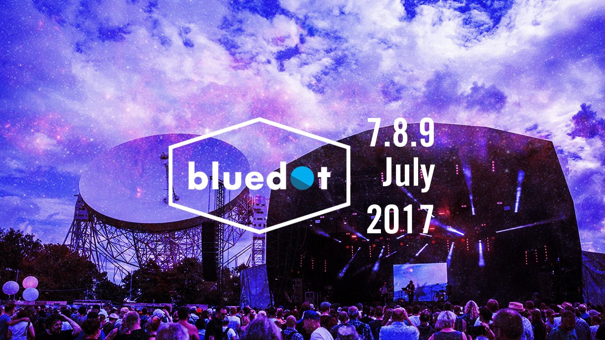
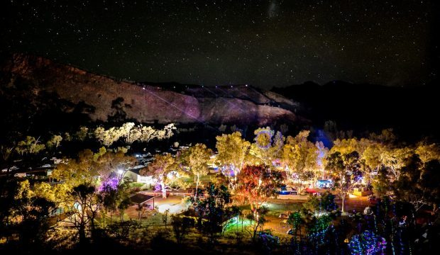
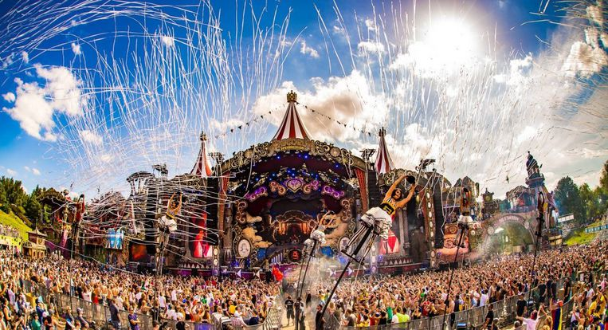

Concurrentie analyse
Links
Bluedot Festival

Positief:
- Er staats een vaste balk aan de onderzijde van de webpagina waar je snel en gemakkelijk je tickets kan
bestellen, met daarnaast een knop voor je te abonneren op de nieuwsbrief samen met nog een leuk introductiefilmpje.
- Om gemakkelijk te kunnen navigeren op de website is het linkerdeel van de pagina vast gesteld met links naar
belangrijke delen van de website zoals de links naar de home-, gallerij-, en nieuwspagina. Ook worden hier
hun links naar hun sociale media pagina's slim weergegeven.
- De sponsors worden onderaan de webpagina subtiel en niet storend afgebeeld.
Negatief:
- Het beginbeeld van de webpagina is een bewegende kwal op een intergalactische achtergrond wat licht
storend is voor het oog.
- Zowel in de linker zijbalk als de onderste vaste balk staan links om je tickets te bestellen wat een
herhaling is en dus overbodig.
- De drukke intergalactische achtergrond kan het lezen van de witte tekst soms moeilijk maken waardoor
de aandacht van de lezer zal verdwijnen.
Wide Open Space Festival

Positief:
- De menubalk is zeer ordelijk en staat bovenaan de pagina vast. Dit maakt het navigeren van de website heel eenvoudig.
- De partners krijgen hun eigen pagina, en wordt dus niet als een storend element op de homepagina geplaatst.
Negatief:
- Op sommige plaatsen staat de tekst geschreven over de gehele breedte van de pagina wat niet
aangenaam is om te lezen.
- De links naar hun sociale media staat helemaal onderaan de pagina zeer klein afgebeeld en worden
zo helemaal afgezonder van de gehele pagina waardoor je niet het gevoel krijgt om hierop te klikken.
- Naast de menubalk is de opmaak van de website zeer eenvoudig. Het lettertype is een basisfont dat niet
zozeer bij de rest van het thema past.
- Er is een zeer lange wachttijd bij het openen van de homepagina.
Tomorrowland

Positief:
- Mooie footer waarbij alles mooi duidelijk weergegeven staat.
- Er werd een leuk effect op de afbeeldingen geplaatst als je naar onder scrollt.
- Ondanks het grote aantal foto's is de laadtijd van de pagina zeer kort.
Negatief:
- Zeer lange pagina door de geschiedenis erop te plaatsen.
- De bovenste header lijkt een beetje verwaterd en valt niet zozeer op.
- De achtergrondafbeelding stopt plots en geeft daarna een gewone witte achtergrond,
hier kon meer mee gebeuren.